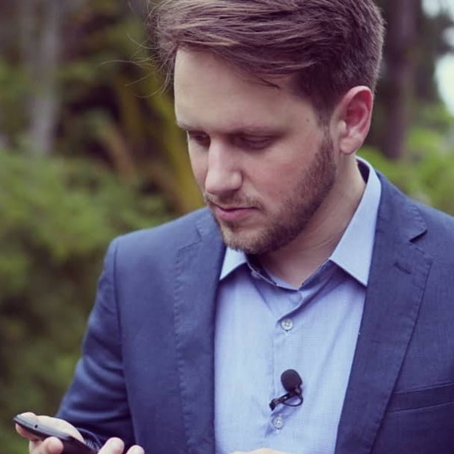
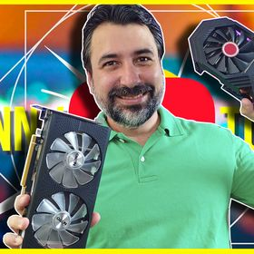

Canais recomendados sobre criptomoedas:
Descrição: Aprenda sobre Bitcoin, Ethereum e mundo DeFi (Finanças Descentralizadas) além de vários conteúdos sobre Criptomoedas em geral de forma simples e didática.
Conteúdo simplificado para ajudar leigos a entender melhor sobre a tecnologia e o mundo das criptomoedas.
Falamos sobre trade e tecnica psicologica de trading aplicadas no mercado de crypto.
Vamos juntos encontrar oportunidades nesse mercado inovador.
Análises gráfica, técnicas e fundamentalistas aliando cenários macroeconomicos que intereferem nos preços de todos os ativos no mundo.
Augusto Backes
Descrição:
Um cara curioso que curte muito qualquer tecnologia!
Já sabia muito sobre computadores muito antes de tentar minerar criptomoedas.
Neste canal divulgarei as novidades tecnológicas que estão ocorrendo no mundo bem como compartilharei minhas experiências de forma a ajudar a todos.
Denny Torres
Descrição
SEJA BEM-VINDO AO NOSSO CANAL DE ANÁLISE TÉCNICA COM FOCO EM CRIPTOMOEDAS, AÇÕES E COMMODITIES.
Fausto Botelho, começou em 1977 a estudar e usar Análise Técnica. A Enfoque Gráfico, empresa que fundou em 1983 e fazia Revistas de gráficos tem hoje a Plataforma com os melhores e mais completos Gráficos de Criptomoedas.
Atualmente, totalmente focado em Criptomoedas desde 2017, usa sua experiência para analisar em seus vídeos em português e inglês, as melhores oportunidades nessa nova classe de Ativos que acredita, irá transformar profundamente o mundo. Semanalmente continua a fazer também a Quinta Técnica, sobre Ações, Cambio e Commodities que está no ar desde 2010.
Tendo ministrado mais de 100 cursos de Análise Técnica e Controle de Risco nos Mercados de ações e commodities, desde 1984, mergulhou nas Criptos em 2017.
Fausto ₿otelho foi eleito o #14 mais influente do Brasil em Criptomoedas segundo Cointelegraph Brasil Top 50 https://bit.ly/2UL0qNW

Fausto Botelho
Descrição
Olá, eu sou Fernando Ulrich, seja muito bem-vindo. Aqui você vai aprender de uma forma descomplicada temas como economia, ciclos de mercado, dinheiro, finanças, investimentos, tecnologia. Depois de viver na pele a grande crise financeira de 2008, resolvi fazer um mestrado em Economia da Escola Austríaca pela URJC (Madri, Espanha) onde pude focar em ciclos econômicos e mercados globais. Quem entende como a economia e os sistema financeiro funcionam, consegue se antecipar aos principais movimentos do mercado, se protegendo e obtendo retornos mais consistentes.
Tenho mais de 18 anos de experiência internacional nos mercados financeiro e imobiliário, com passagens pelos grupos XP Inc, ThyssenKrupp e Banco Indusval & Partners. Atualmente, sou conselheiro da Casa da Moeda do Brasil, do Instituto Mises Brasil e integro a equipe de educação da Liberta Investimentos.
Fernando U/rich
Descrição
Olá, meu nome é Adenilson Alves, fundador do canal Vamos Falar Sobre Grana, que tem a intenção de explicar de forma clara, assuntos relacionados ao mercado financeiro como um todo, trazendo conteúdo sobre diversos assuntos relacionados ao mercado financeiro, tais como:
Criptomoedas,
Diversificação de investimentos,
Fundos de Renda Fixa,
Fundos de Renda Variável,
Finanças para iniciantes,
Bolsa de Valores,
Fundos imobiliários,
Renda de aluguel,
Preço de seguros,
Previdência Privada,
Matemática Financeira,
O valor do dinheiro,
Educação financeira,
Gestão Financeira,
Etc.
Forte abraço
Prof. Ms. Adenilson Alves Bezerra
Canal: Vamos Falar Sobre Grana
Vamos Falar Sobre Grana
Descrição
Obrigado por se inscrever no canal! Aqui você encontrará o conteúdo necessário para seu aprendizado no universo do bitcoin e outras criptomoedas , qualquer dúvida deixe nos comentários que responderemos . Att Vô Epa
Voepa Bitcoin
Descrição
SEJA BEM VINDO A UNIVERSIDADE DO BITCOIN. O MELHOR PORTAL DA AMÉRICA LATINA SOBRE TRADING DE BITCOIN!
AQUI VOCÊ APRENDERÁ DICAS E TÉCNICAS QUE ME AJUDARAM A GANHAR MEU PRIMEIRO 1 MILHÃO DE REAIS ATRAVÉS DO TRADING DE CRIPTOMOEDAS.
NOSSO FOCO É ENSINAR O ESSENCIAL E LHE TRANSFORMAR NUM ESPARTANO, UM PROFISSIONAL!
TAMBÉM APRENDEREMOS SOBRE COMO CRIAR UMA MENTE DE CAMPEÃO NA VIDA PESSOAL E PROFISSIONAL.
SOU CRIADOR DO MÉTODO PROGRAMAÇÃO NEUROFINANCEIRA E A PRIMEIRA PESSOA NO MUNDO A FALAR SOBRE ISSO!
APROVEITE AO MÁXIMO!
Universidade do Bitcoin
Todos os canais citados aqui foram selecionados pela nossa equipe de desenvolvimento informativo das criptomoedas, estes possuem o proposito de servir como meio de comunicação informativo sobre o que ocorre no mundo dos cripto ativos explicando gráficos, exchanges, carteiras digitais e físicas. Todas as recomendações sobre compra e vendas das moedas fica em conta do visualizador sobre a analize feita por eles, as descrições postas vieram pela descrição exibida no canal de cada youtuber aqui.
att. Cripto membros...